Brute Boris
 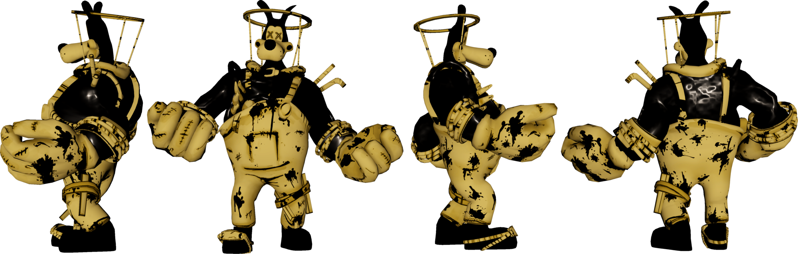
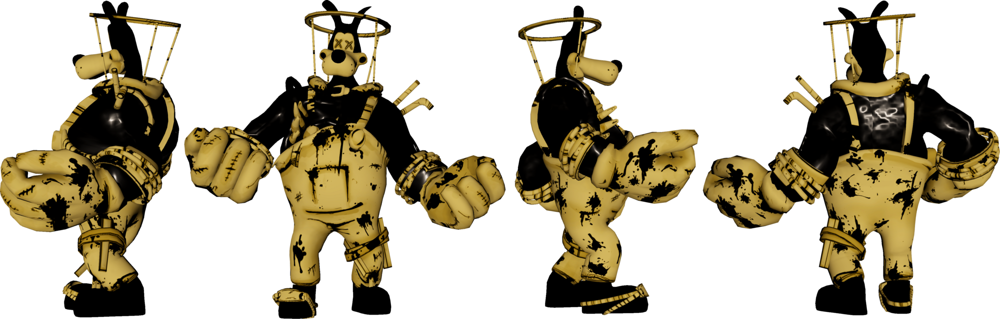

This scary looking guy became the surprize of chapter four.Bute Boris was made by Alice from either the end of chapter 3 or chapter 4. He's design was based on Frankenstien. He has huge hands, a leg brace around his left leg, a halo over his head, and some pipes stickiing out of his back. His organs and rib cage are exposed. His body managed to swell due to all of the scraps in his body. Brute Boris is also very hostile due to Twisted Alice controlling him. It is assumed that Alice used some of the things that Henry gave her to put in Boris. Alice substituted the things she took from his body but the body kept on rapidly rejecting it so she tied it together.
Lost Ones

 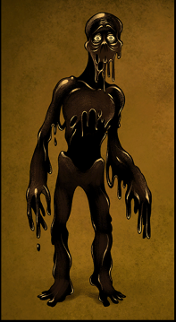
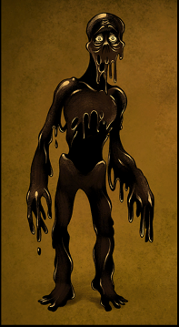
The Lost Ones have a human-like apperance, but it is deformed and skeletal. They are completely covered in ink. At times, their eyes glow yellow, but at others, they are just a deep lavender. Although there is also ink dripping from the mouth looking like a skull, they are completely harmless unless provoked. They will stand completely still and sometimes swaying back and forth. There is one banging their head on the wall, and another one complaining that they want to go home. Not much is known about the lost ones.
Burtrum Piedmont
 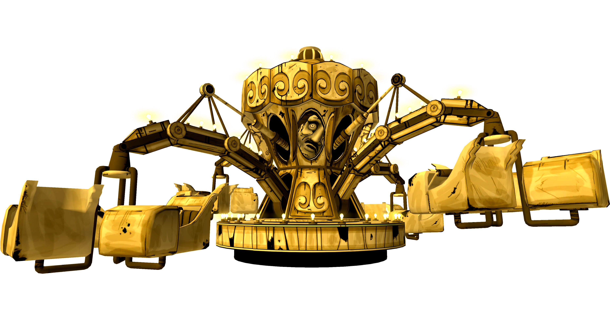
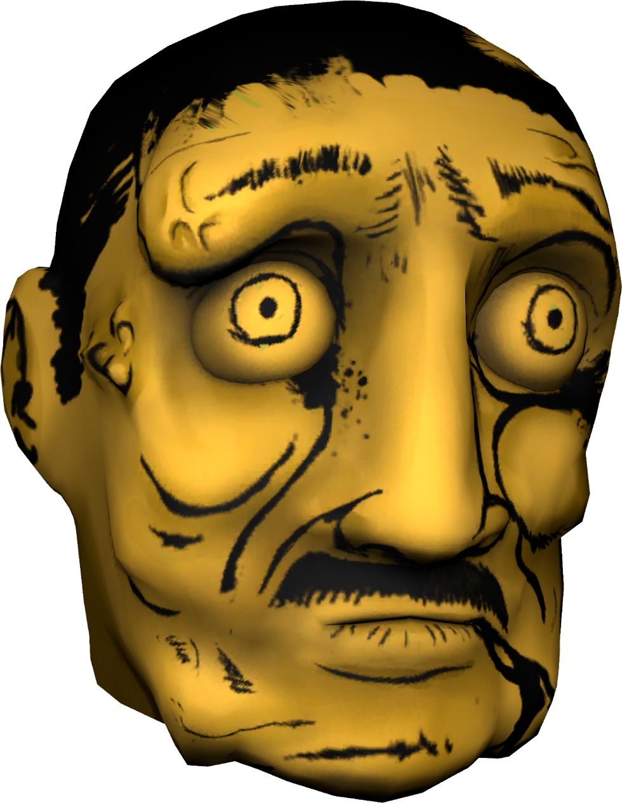
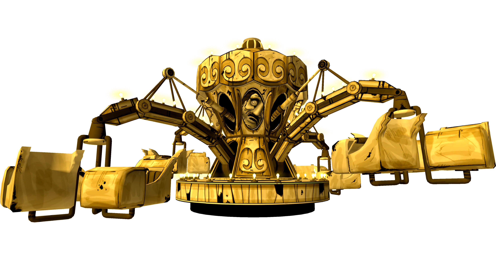
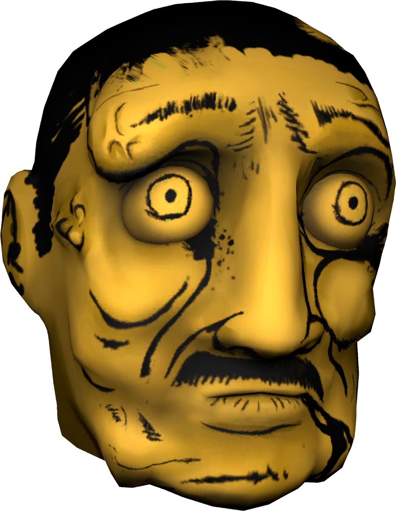
All you see of Bertrum in-game is his head inside the carousel. He has black hair and a mustache. He also has lumps all over his face and it is unknown why. Burtrum was a quite dramatic, arrogant, and egotistical person. Not much is known about Bertrum either.
Alison Angel

 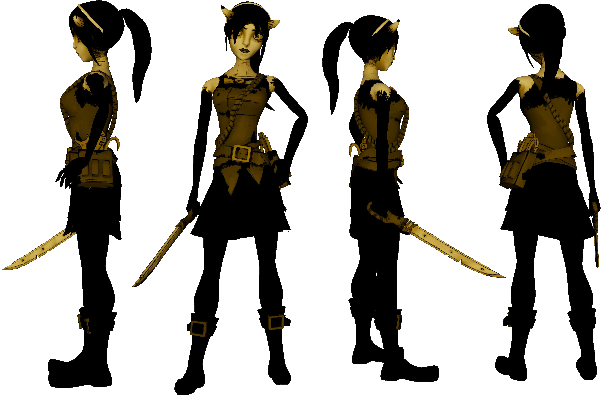
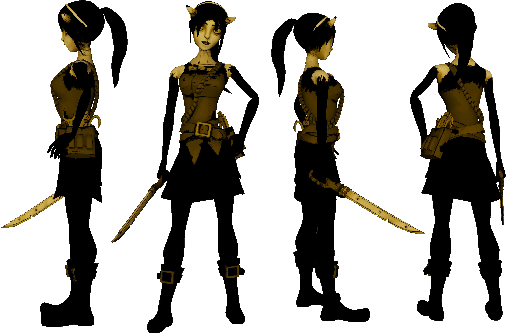
Allison angel was supposed to have the soul of Allison Pendle, which then changes to Allison Conner after marring Thomas Conner, but doesn't as shown at the end of chapter 5, The Last Reel, on Joey's board stating that Wally Franks, Allison Conner, and Thomas Conner refused to come. She has black hair tied in a ponytail, a headband, and her horns have ink on the tips. She also wears a dress with a rope, tights and a pair of boots. Her belt is shown to have a wrench, crowbar, and gent pipe. She also weilds a machete.
Tom Boris
 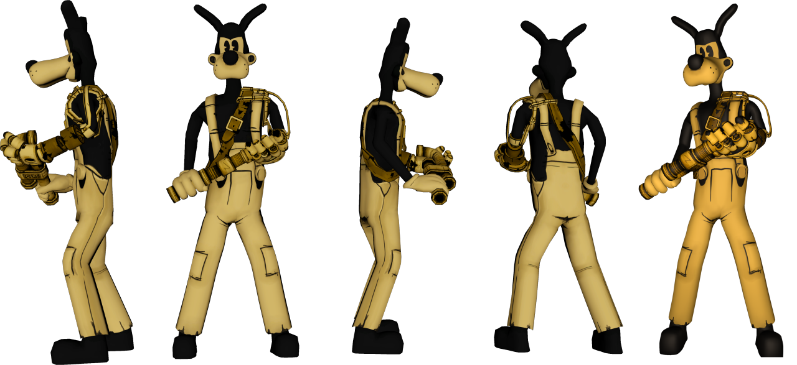
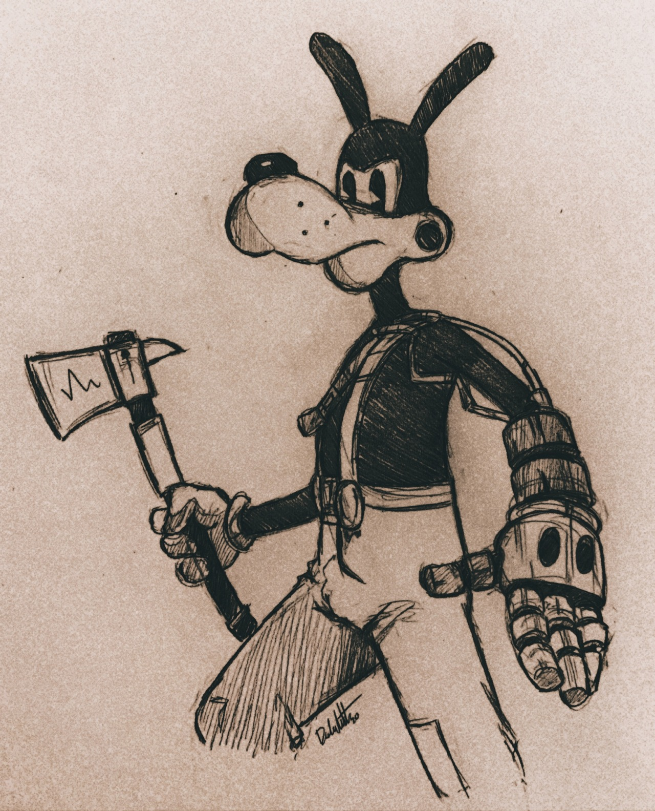
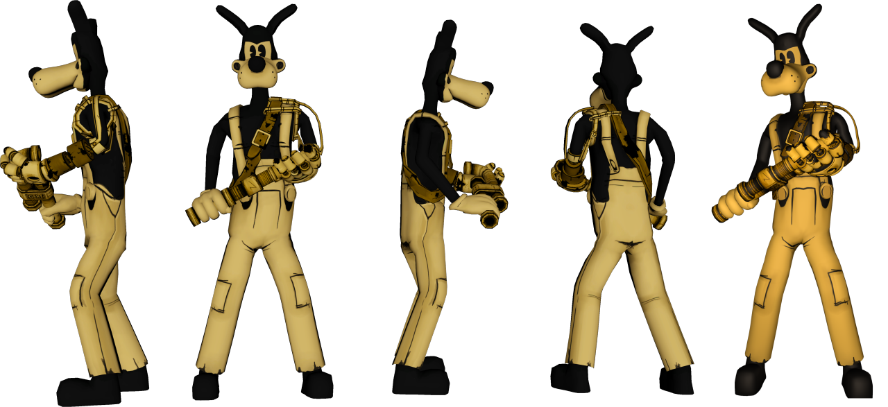
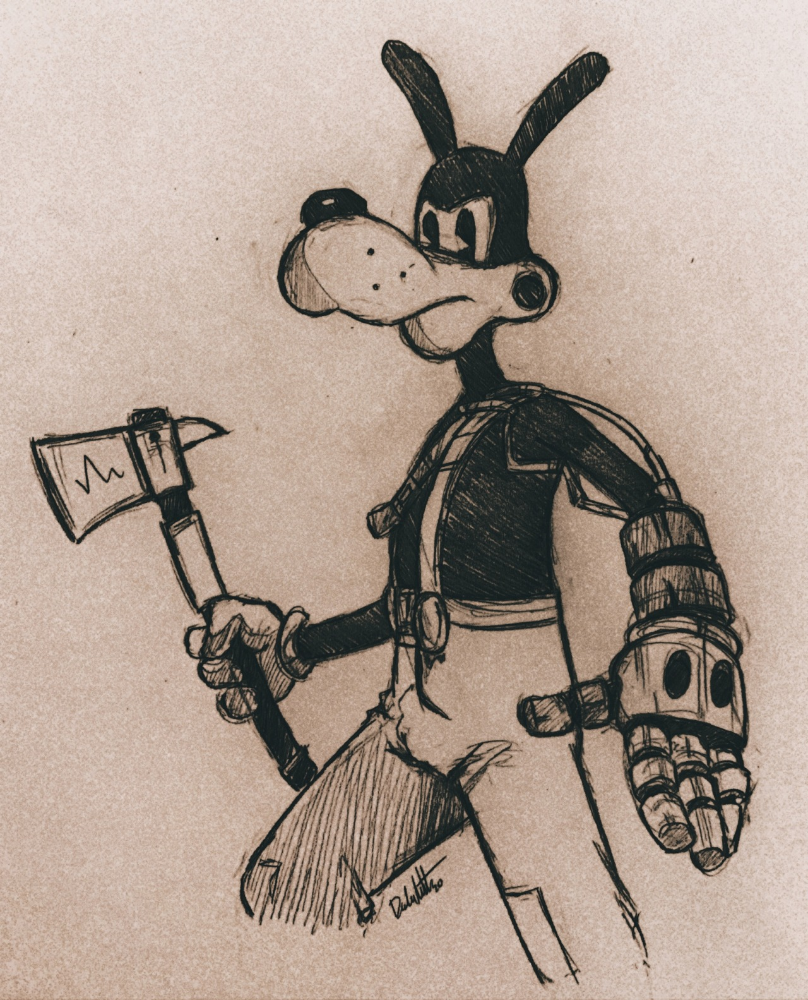
Tom Boris is almost identical to the cartoon character, Boris the Wolf. The only differences are his eyes are slightly slanted, and he lost hisleft arm. In replace of his left arm is a robot hand likt the bendy robot you've seen earlier in chapter 4. He wears a strap, seemingly to keep the arm on, and his eyes are closer together than Boris's. The eyes also face a different direction. Instead of the cut facing left, it faces right. You can make him have an invisible bone if you gave boris a bone in chapter 4, just use the seeing tool.